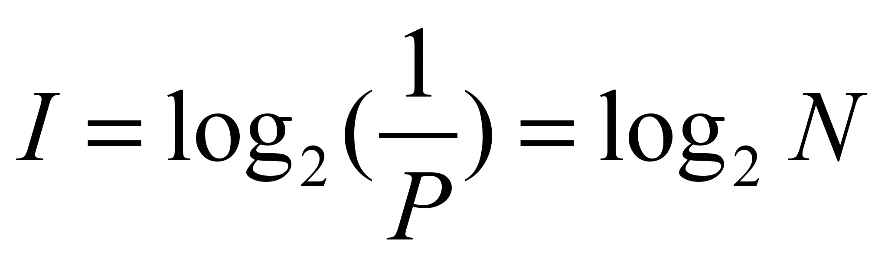
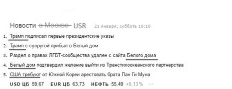
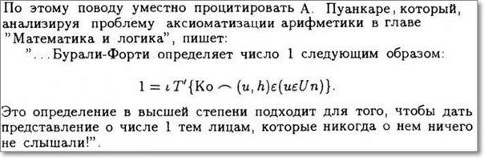
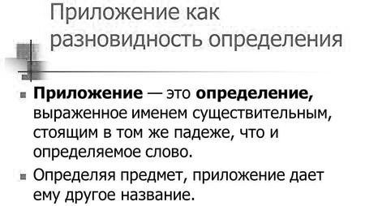
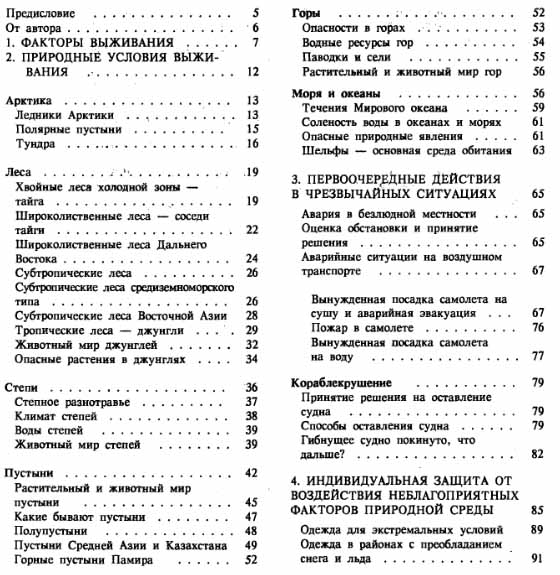
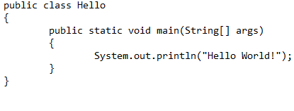
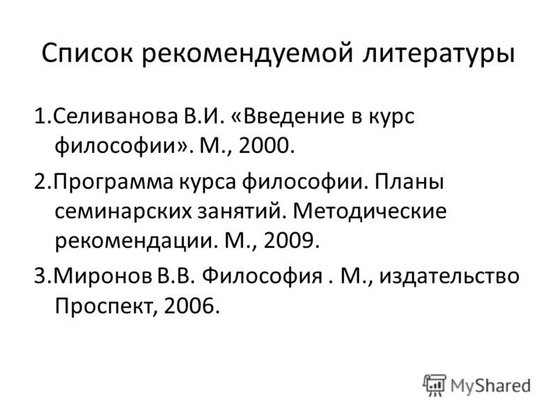
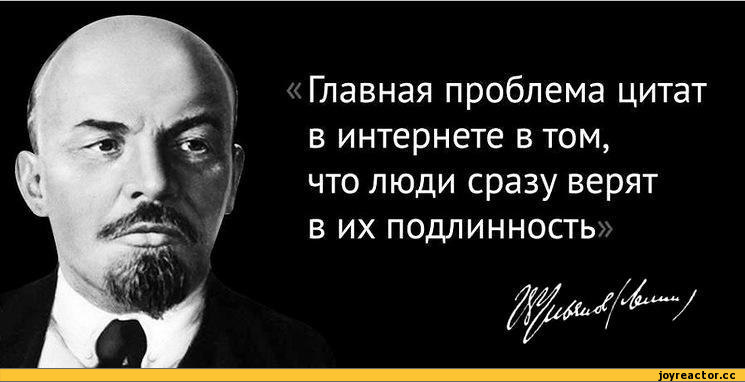
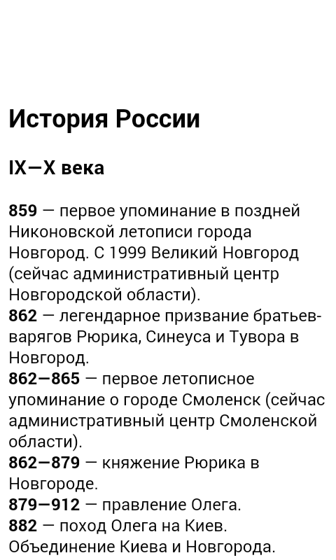

| Картинка | Текст |
|---|---|
|  |
I=log2(1/P)=log2N |
|  |
Новости в
USD ЦБ 59,67 EUR ЦБ 63,73 НЕФТЬ 55,49 +0,13% |
|  |
По этому поводу уместно процитировать А. Пуанкаре, который,
Это определение в высшей степени подходит для того, чтобы дать |
|  | Aspernatur? |
|  | Dignissimos? |
|  | Ipsam. |
|  | Quaerat? |
| Soluta? | |
|  | Quasi. |
|  | Recusandae. |